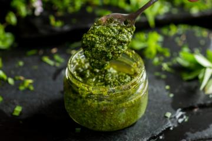

Pesto
Home

Traditional Pesto Ingredients:
Fresh basil leaves (about 2 cups packed)
esan cheese (or Parmigiano-Reggiano, ½ cup grated)
rino cheese (optional, adds a sharper flavor)
a virgin olive oil (½ cup or as needed)
Steps
Toast the pine nuts (optional, but adds flavor)
Heat a dry skillet over medium heat.
Add pine nuts and toast, stirring often, until golden (1–2 minutes). Let them cool.
In a food processor (or mortar & pestle), add garlic and pine nuts.
Pulse a few times until coarsely chopped.
Add the fresh basil to the processor.
Pulse again until everything is finely chopped but not puréed.
Add grated Parmesan (and Pecorino if using).
Pulse a few times to combine.
While the processor is running, slowly drizzle in the olive oil until smooth.
Scrape down the sides if needed.
Add salt (and lemon juice if using).
Pulse again and adjust seasoning.
Use immediately, or store in an airtight container in the fridge for up to 5 days.
Tip: Cover the surface with a thin layer of olive oil to keep it green.